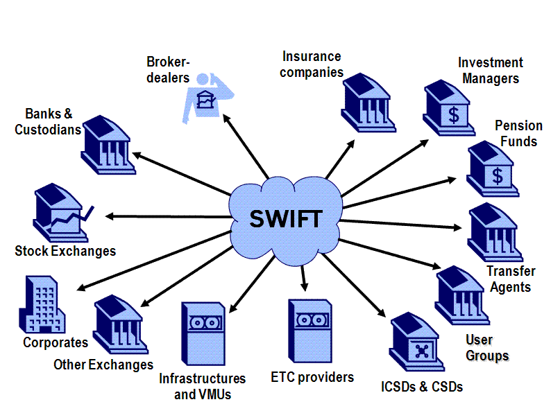

Немного о системе SWIFT
 Что такое SWIFT и как он возник?
Что такое SWIFT и как он возник?Аббревиатура SWIFT расшифровывается как Society for Worldwide Interbank Financial Telecommunications. В переводе это значит «Сообщество всемирных межбанковских финансовых телекоммуникаций», основной целью которого является передача информации и совершение платежей в международном формате.
Предпосылки к созданию системы SWIFT были замечены еще в начале 50-х годов 20 века, когда, спустя несколько лет после Второй Мировой войны, государства начали заниматься активной торговлей на международном уровне. Как результат, это повлекло за собой резкое увеличение банковских функций и операций. Ранее общение между банками совершалось посредством почты и телеграфа, однако новые условия диктовали новые правила – такие способы передачи информации стали неэффективными из-за стремительного увеличения объема банковских операций. Более того, очень часто стали возникать недоразумения и ошибки во время проведения межбанковских операций, связанные с системами функционирования различных банков и отсутствием необходимой стандартизации. Банкиры понимали, что рано или поздно возникнет новый способ бумажного обмена финансовой информации между всеми банками мира. И они были правы…
Разработка такой системы началась в начале шестидесятых годов. Представители шестидесяти крупнейших европейских и американских банков несколько раз собирались для обсуждения волнующей всех проблемы – создания единой системы стандартизации в банковской сфере. Для этой цели было решено использовать точную вычислительную технику – компьютеры, которые, как известно, обеспечивали максимально эффективную систему передачи данных такого рода.
Непосредственная работа над данной системой, способной круглосуточно обеспечивать обмен финансовой информацией с высокой защитой и под контролем, началась в начале 1968 года. Уже в 1972 создатели подготовили официальный проект и сделали необходимые расчеты по рентабельности этой системы.
В мае 1973 года при участии 239 банков, расположенных в 15 странах мира, была создана и учреждена платежная система под названием SWIFT. Её разработчики трудились более четырех лет для практического осуществления этого учреждения, и 9 мая 1977 года международная сеть, отвечающая за передачу данных, была официально запущена. В конце этого же года число банков, желающих присоединиться к SWIFT, возросло до 586. Ежедневно сообщество передавало 450 тысяч электронных сообщений.
На сегодняшний день в составе SWIFT находятся более 7 тысяч финансовых организаций и банков, которые находятся в 190 странах. Несмотря на достаточно большое расстояние друг от друга (иногда возникает необходимость передачи информации из США в Австралию), они могут беспрепятственно обмениваться сообщениями и круглосуточно взаимодействовать.
Схема работы SWIFT

Существует два типа сообщений: финансовые (передающиеся между пользователями системы) и системные (передающиеся между пользователями и системой).
Все сообщения системы SWIFT включают в себя:
- заголовок
- текст сообщения
- трейлер
Благодаря использованию компьютерного терминала (CBT) становится возможным осуществление связи с универсальным компьютером, передачей и получением сообщений и управлением прикладными задачами. Все сообщения хранятся в региональном процессоре (RPG), после чего отправляются для обработки в следующий операционный центр. Там SWIFT занимается их обработкой:
- проверяет синтаксис
- создает новые заголовки и преобразовывает сообщения в исходящую форму
- добавляет трейлеры
- копирует и шифрует сообщения для хранения
Поле проверки отправитель моментально получает уведомление: положительный результат – АСК, отрицательный – NAK. Каждому сообщению автоматически причисляется входящий номер.
Преимущества и недостатки SWIFT
На сегодняшний день в России SWIFT уступает в популярности таким известным системам переводов как, например, Western Union или «Юнистрим», однако для оплаты зарубежных услуг или перевода крупной суммы денег в другую страну является, по сути, самым рациональным решением (особенно для тех, у кого возникает постоянная необходимость отправки немалых денежных переводов за границу).
Невероятная масштабность распространения SWIFT в мире позволяет осуществить перевод на клиентский счет любого известного банка, при этом сумма ограничивается только допустимыми величинами, которые не нарушают экономическое законодательство того или иного государства.
SWIFT-переводы отправляют финансовые средства не на ФИО получателя, а на определенные счета, при этом у вас всегда имеется возможность самому выбрать валюту перевода. Также система максимально конфиденциальна и безопасна. При переводе денег через SWIFT, комиссия всегда составляет определенную (фиксированную!) сумму, которая будет увеличиваться в минимальной пропорции от суммы переводов, что будет выгодным при переводе больших сумм денег за рубеж.
Итак, основные преимущества SWIFT заключаются в:
- высокой скорости доставки переводов. Среднее время доставки в любую точку мира – приблизительно 15 минут для обычного и 2 минуты для срочного сообщения;
- отсутствии ограничений по сумме платежа;
- широком выборе валют, которыми оперирует SWIFT;
- низких тарифах (они действительно намного ниже, чем в других системах);
- широком распространении и популярности в мире, что позволяет осуществлять платежи практически во все страны;
- гарантии своевременной доставки перевода. SWIFT покроет возникшие убытки клиентов в случае, если будут нарушены сроки доставки по вине системы.
Недостатком же можно считать достаточно длительный срок обработки платежей – примерно 5 банковских дней. Также, при выборе такого перевода обязательно учитывайте, что хоть сама система и имеет более-менее фиксированную комиссию, основные затраты получатся при получении денег в банке и межбанковском переводе.
Более того, система зависит от развития корреспондентских отношений банка, посредством которого вами осуществляется перевод (ведь один денежный перевод в SWIFT может осуществляться несколькими финансовыми организациями или банками). Помимо этого, стоимость перевода может повысить наличие банков-посредников, которые возникают тогда, когда валюта перевода отличается от национальной валюты государства, в которое данный перевод осуществляется.
Итак, основные недостатки SWIFT заключаются в:
- обязательной необходимости предоставления в банк достаточно большого пакета документов;
- контролем (с 2011 года) над этой системой госдепа США, который осуществляет мониторинг всех платежей;
- отсутствии возможности стать участником системы SWIFT малых и средних банков (из-за достаточно внушительного вступительного взноса).
Что такое SWIFT-код и где он используется?
SWIFT-кодом называют уникальный идентификационный код определенного банка или любого другого участника финансовых расчетов, использующегося при переводе денежных средств из одного государства в другое между банками (которые являются участниками системы SWIFT). Код формируется по следующему стандарту: ISO 9362 (ISO 9362 — BIC).
SWIFT-коды банков обычно можно найти на сайте самого банка (раздел «реквизиты» или «переводы). Вы также можете воспользоваться специальными справочниками SWIFT-кодов банков.
Стоит отметить, что данный код используется только на мировом рынке. Для проведения банковских операций внутринационального характера нужны другие коды. Идентификационная система банков Российской Федерации называется «БИК». В Великобритании, например, это «Sort Code». Безусловно, можно перечислить такие системы всех стран мира, но гораздо легче будет воспользоваться соответствующими справочниками.
Не стоит забывать, что участие в идентификационной системе SWIFT носит исключительно добровольный характер, поэтому отсутствие подключения к ней будет означать, всего лишь, замедление процесса международных банковских операций. Также SWIFT-код гарантирует полную безопасность того или иного перевода, таким образом, риск того, что перевод затеряется между банками, сводится к минимуму.
По материалам сайта : http://geektimes.ru/